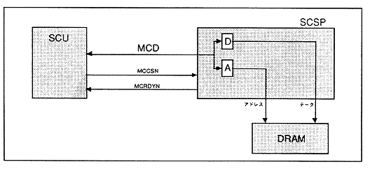

Figure 3.1 Access Overview

∙ The interface starts when the select signal (MCCSN) from the main CPU falls, and ends when the select signal rises. If "1" is output to the ready signal (MCRDYN) to the main CPU, the select signal (MCCSN) from the main CPU and the data bus (MCD [7: 0]) of the main CPU do not change.